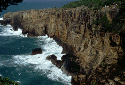
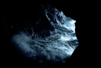
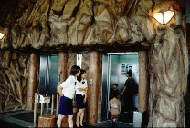
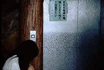
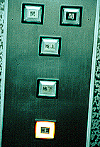
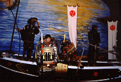
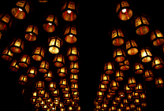
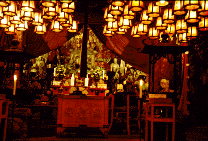
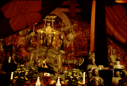

三段壁洞窟/和歌山県白浜町

南紀白浜で一番の観光スポットである断崖絶壁景勝地の三段壁に行った。
折りしも台風接近のため和歌山県沿岸部は大雨強風波浪高波警報発令中で、それはそれは物凄い「ザッパーン」を見る事が出来た。海面で弾ける波飛沫が50メートル上の展望台まで飛んで来る位すんごいの。
で、そこから海面すれすれの海蝕洞窟に地上から一気にエレベーターで降りてしまおうという趣向の三段壁洞窟はもちろん営業停止。
で翌日、改めて洞窟に行く。
入場料はちと高めの1200円也。但し町内の至るところに割引券が出回っているので実質的には1100円なのだが。

内部はダレた土産屋と洞窟を意識した造りのエレベーターホール。「本日は高波の為波しぶきに特にご注意下さい」との脅し文句が緊張感を盛り上げてくれるが、その前でエレベーターガールのおねいちゃんが客が待っているのにも関わらずマニキュア塗りに一心不乱な様子などを見るとその緊張感も一気にメルトダウンしてくる。

で、エレベーターに乗り込む。階数表示は「地上」「地下」「洞窟」の3つ。シブい。
設備投資に金かけてあるだけあってエレベーターのスピードは速い。あっという間に海面の洞窟に着く。
ちょっと待て、いくらなんでも速すぎるぞ。これじゃあさっき見たあの絶壁の「ドーン」をあまりにも馬鹿にしてるんじゃあねえか。これじゃ近所のスーパーに買い物行ってエレベーター乗ったのと何の変わりもないぞ。
せめてエレベーターをシースルータイプにしてこのエレベーターの凄さを実感させてくれ。
で、洞窟内はかつて熊野水軍の舟隠し場であったとされるのにちなんで、当時の生活を再現した番所小屋や水軍と一緒に記念写真コーナーなどがある。はっきり言ってチンケである。この時点でかなりの観光客がブチ切れ寸前状態に陥っている。何と行っても入場料がアレだから。ま、洞窟でガンガンはじける波なんかは結構迫力あるんだけど。
で、前説が長くなったがここ三段壁洞窟に弁天様が祀られているのだ。天井にびっしり並ぶ御灯明。背後には気の狂ったような波飛沫。そこに十六童子に囲まれて弁天様が鎮座している。頭の上に宇賀神さんを載せてついでに鳥居まで載せて御機嫌さんだ。

なにがナニって訳じゃないけど、この雰囲気がイイ感じだった。
帰りのエレベーター内はちょっと御満悦気味の私を除いては皆不機嫌の御様子。
地上までの時間がこころなし長く感じられた。
帰り際、「ケッ」と言い捨てて帰って行ったおじさんが印象的でした。
1999.9
珍寺大道場 HOME